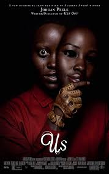
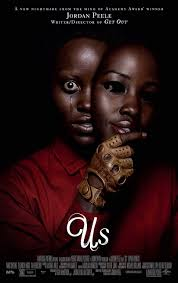

Movies by Jordan Peele
 


Genre:Horror/Sci-fi Run Time: 2h 10m
After random objects falling from the sky result in the death of their father, ranch-owning siblings OJ and Emerald Haywood attempt to capture video evidence of an unidentified flying object with the help of tech salesman Angel Torres and documentarian Antlers Holst.

Genre:Horror/Comedy Run Time: 1h 44m
Now that Chris and his girlfriend, Rose, have reached the meet-the-parents milestone of dating, she invites him for a weekend getaway upstate with her parents, Missy and Dean. At first, Chris reads the family's overly accommodating behaviour as nervous attempts to deal with their daughter's interracial relationship, but as the weekend progresses, a series of increasingly disturbing discoveries leads him to a truth that he never could have imagined.
Genre:Horror/Mystery Run Time: 2h 1m
Accompanied by her husband, son and daughter, Adelaide Wilson returns to the beachfront home where she grew up as a child. Haunted by a traumatic experience from the past, Adelaide grows increasingly concerned that something bad is going to happen. Her worst fears soon become a reality when four masked strangers descend upon the house, forcing the Wilsons into a fight for survival. When the masks come off, the family is horrified to learn that each attacker takes the appearance of one of them.